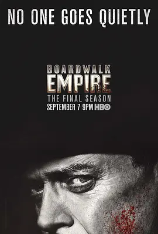

9.3
大西洋帝国 第五季
Boardwalk Empire Season 5
2014
美国
评分 9.3
导演:
蒂莫西·范·帕腾
演员:
史蒂夫·布西密 / 凯莉·麦克唐纳 / 迈克尔·珊农 / 谢伊·惠格姆 / 斯蒂芬·格拉汉姆
类型:
剧情
剧情简介
故事来到1931年，经济大萧条的阴影笼罩全美。大西洋城的木板路仍在海风中延展，但昔日的奢华光辉已被时代的重量冲刷得斑驳。努基·汤普森面对新的现实，他不再只是权力棋局中的玩家，而更像是试图在衰败的城池里找回自己位置的人。他的行动更加克制，每一次对话都笼罩着迟疑与审慎，仿佛他在倾听时代的脚步声，判断何时退场、何时反击。与此同时，黑帮格局在大萧条的冲击下重新洗牌。斯蒂芬·格拉汉姆饰演的艾尔·卡彭在芝加哥声势暴涨，他的鲁莽与野心带来新的威胁，也让城市间的权力裂隙迅速扩大。凯莉·麦克唐纳饰演的玛格丽特依旧在现实中艰难前行，她的聪慧让她能在金融世界中生存，却也让她再次被卷入努基的命运轨迹。迈克尔·珊农的角色继续在信仰与命运之间挣扎，他的沉默与暴烈交错，像是一根随时可能断裂的弦。第五季以双线叙事呈现努基的过去与现在，1880年代的童年片段揭开他崛起背后的秘密，让这位木板路之王的形象更显孤独与复杂。时代更替下，每个人都被逼到悬崖边缘，不再是争夺权力，而是寻找活下去的方式。爵士乐依旧响在夜里，但旋律里没有了轻快，更多的是心底的沉重与告别。